Sobre
Sobre

- Membro do PHPSP
- Desenvolvedor há mais de 15 anos
- Entusiasta em cibersegurança
- Consultor de TI e instrutor de treinamentos
Campitelli
Slides

Introdução
Introdução
Controle de Versão
Sistemas de Versionamento de Código (em inglês: "Version Control System" ou VCS) são serviços responsáveis por controlar modificações e diferentes versões do código de nossos sistemas, fornecendo histórico para alterações, trabalho em equipe e separação do ambiente de trabalho entre colaboradores
Introdução
Tipos de Controle de Versão
Centralizado
Um servidor central é responsável por receber todas as modificações dos colaboradores
Toda alteração feita na máquina é automaticamente enviada ao servidor central
Vários metadados ficam apenas no servidor principal, acarretando em um único ponto de falha
Distribuído
Mesmo havendo um servidor principal, os colaboradores possuem suas cópias offline que podem servir inclusive como backup
As alterações são primeiro realizadas na cópia local do servidor e, depois, devem ser enviadas para o servidor principal pelo colaborador
Introdução
Ferramentas de Controle de Versão
Alguns dos principais Sistemas de Controle de Versão:
- Source Code Control System (SCSS), lançado em 1973;
- Concurrent Versions System (CVS), lançado em 1986 (mas que teve sua primeira versão disponível para a comunidade em 1990);
- Subversion (SVN), lançado em 2000;
- BitKeeper, lançado em 2000;
- Mercurial (Hg), lançado em 2005;
- Git, lançado em 2005.
Introdução
Git
Ferramenta criada por Linus Torvalds (o criador do Linux) em 2005, após a licença do BitKeeper se tornar paga, impossibilitando seu uso no Linux
BitKeeper and Linux: The end of the road?Introdução
Git
Palestra do Linus Torvalds sobre git em 2007Introdução
Git
The development of Git began on 3 April 2005. Torvalds announced the project on 6 April and became self-hosting the next day. The first merge of multiple branches took place on 18 April. Torvalds achieved his performance goals; on 29 April, the nascent Git was benchmarked recording patches to the Linux kernel tree at a rate of 6.7 patches per second. On 16 June, Git managed the kernel 2.6.12 release.Git (Wikipedia)
Torvalds turned over maintenance on 26 July 2005 to Junio Hamano, a major contributor to the project. Hamano was responsible for the 1.0 release on 21 December 2005.
Descartando mudanças locais
git reset <referência>
Traz todo o estado do commit especificado para o projeto atual, mantendo as modificações locais
$ git log --oneline
9581191 (HEAD -> main) Versão nova
5287db4 Versão antiga
$ git reset 5287db4
Unstaged changes after reset:
M arquivo
$ git log --oneline
5287db4 (HEAD -> main) Versão antiga
Descartando mudanças locais
git reset --hard <referência>
Traz todo o estado do commit especificado para o projeto atual, descartando as modificações locais
$ git log --oneline
9581191 (HEAD -> main) Versão nova
5287db4 Versão antiga
$ git reset --hard 5287db4
HEAD is now at 5287db4 Versão antiga
$ git log --oneline
5287db4 (HEAD -> main) Versão antiga
$ git status
On branch main
nothing to commit, working tree clean
Desfazendo commits
git revert <hash-do-commit>
Ao invés de descartar os commits, esse comando cria um outro commit com as alterações "reversas"
Ou seja: linhas que foram adicionadas serão removidas, as que foram removidas serão adicionadas de volta, arquivos que foram criados serão excluídos, etc...
$ git log --oneline
7d4abd6 (HEAD -> main) Mudanças do arquivo
$ git show 7d4abd6 --oneline
7d4abd6 Mudanças do arquivo
diff --git a/arquivo b/arquivo
index 7898192..3dcb048 100644
--- a/arquivo
+++ b/arquivo
@@ -1 +1 @@
-Versão anterior
+Mudanças do arquivo
Desfazendo commits
git revert <hash-do-commit>
Ao invés de descartar os commits, esse comando cria um outro commit com as alterações "reversas"
Ou seja: linhas que foram adicionadas serão removidas, as que foram removidas serão adicionadas de volta, arquivos que foram criados serão excluídos, etc...
$ git revert 7d4abd6
[main 26b83e6] Revert "Mudanças do arquivo"
1 file changed, 1 insertion(+), 1 deletion(-)
$ git log --oneline
26b83e6 (HEAD -> main) Revert "Mudanças do arquivo"
7d4abd6 Mudanças do arquivo
$ git show 26b83e6 --oneline
26b83e6 (HEAD -> main) Revert "Mudanças do arquivo"
diff --git a/arquivo b/arquivo
index 3dcb048..7898192 100644
--- a/arquivo
+++ b/arquivo
@@ -1 +1 @@
-Mudanças do arquivo
+Versão anterior
Pilha de backup
git stash
Salva as diferenças atuais do projeto (que ainda não estão em um commit) em uma área à parte, possibilitando rapidamente recuperá-las posteriormente
$ git status
On branch main
Changes not staged for commit:
(use "git add <file>..." to update what will be committed)
(use "git restore <file>..." to discard changes in working directory)
modified: arquivo
no changes added to commit (use "git add" and/or "git commit -a")
$ git stash push
Saved working directory and index state WIP on main: a1d4cfc Criando arquivo
$ git status
On branch main
nothing to commit, working tree clean
$ git stash pop
On branch main
Changes not staged for commit:
(use "git add <file>..." to update what will be committed)
(use "git restore <file>..." to discard changes in working directory)
modified: arquivo
no changes added to commit (use "git add" and/or "git commit -a")
Dropped refs/stash@{0} (66650bc83e829d949d6ba24833962f539de87aa9)
Pilha de backup
git stash
É possível listar os itens da pilha, definir mensagens personalizadas e retirar itens específicos ao invés do último
$ git stash push -m 'Alternativa 2 do novo layout'
Saved working directory and index state On main: Alternativa 2 do novo layout
$ git stash list
stash@{0}: On main: Alternativa 2 do novo layout
stash@{1}: On main: Alternativa 1 do novo layout
$ git stash pop 1
On branch main
Changes not staged for commit:
(use "git add <file>..." to update what will be committed)
(use "git restore <file>..." to discard changes in working directory)
modified: arquivo
no changes added to commit (use "git add" and/or "git commit -a")
Dropped refs/stash@{1} (c939104fffd184cc567757af264c0e9f20ceae94)
$ git stash list
stash@{0}: On main: Alternativa 2 do novo layout
Alterando o último commit
git commit --amend
Aplica as modificações atuais no último commit ao invés de criar um novo
$ git commit -m "Commit antigo sem um certo arquivo"
[main 9be2532] Commit antigo sem um certo arquivo
1 file changed, 100 insertions(+)
$ git log --oneline
9be2532 (HEAD -> main) Commit antigo sem um certo arquivo
54d3769 Commit anterior
$ git add novo-arquivo
$ git commit --amend -m "Novo commit com o arquivo adicionado"
[main 9fa3283] Novo commit com o arquivo adicionado
2 files changed, 200 insertions(+)
create mode 100644 novo-arquivo
$ git log --oneline
9fa3283 (HEAD -> main) Novo commit com o arquivo adicionado
54d3769 Commit anterior
Alterando o último commit
git commit --amend
Também é possível informar o argumento --no-edit para não alterar a mensagem
$ git commit --amend --no-edit
[main 937aafe] Mensagem do commit anterior
Date: Seg Jan 1 00:00:01 2024 -0300
1 file changed, 0 insertions(+), 0 deletions(-)
create mode 100644 novo-arquivo
Incorporando Mudanças
git cherry-pick <referência>
Busca um ou mais determinados commits e os trazem para a sua branch
$ git log --oneline
91e2609 (HEAD -> main) Commit inicial
$ git cherry-pick 7d9af37
[main 236b1fc] Esse commit é de outra branch
Date: Seg Jan 1 00:00:01 2024 -0300
15 files changed, 100 insertions(+), 50 deletions(-)
$ git log --oneline
236b1fc (HEAD -> main) Esse commit é de outra branch
91e2609 Commit inicial
Incorporando Mudanças
git merge
Faz a incorporação de uma branch em outra
$ git merge develop
Merge made by the 'ort' strategy.
composer.lock | 20 ++++----
1 file changed, 15 insertions(+), 5 deletions(-)
$ git log --oneline -n1
a06402a (HEAD -> main) Merge remote-tracking branch 'develop'
Incorporando Mudanças
git rebase <nome-da-branch>
"Move" o início da sua branch para outro lugar no histórico de commits, útil para trazer as modificações da main, por exemplo

m2
A branch contém os commits:
m1
m2
b1
b2
b3
b4
$ git rebase origin/main
Successfully rebased and updated refs/heads/develop.
Incorporando Mudanças
git rebase <nome-da-branch>
"Move" o início da sua branch para outro lugar no histórico de commits, útil para trazer as modificações da main, por exemplo

m3
A branch contém os commits:
m1
m2
m3
b1'
b2'
b3'
b4'
$ git rebase origin/main
Successfully rebased and updated refs/heads/develop.
Incorporando Mudanças
git merge vs git rebase
Merge: cria um novo commit trazendo as modificações da outra branch


Rebase: move o início da sua branch para o local especificado
Incorporando Mudanças
Resolução de Conflitos
Ao fazer merge, rebase, cherry-pick e algumas outras operações, o Git pode não conseguir mesclar as mudanças, pedindo para que o usuário resolva os problemas normalmente
Isso pode acontecer, por exemplo, se duas branches possuírem modificações nas mesmas linhas de um arquivo
$ git merge develop
Auto-merging README
CONFLICT (content): Merge conflict in index.html
Automatic merge failed; fix conflicts and then commit the result.
$ git status
On branch main
You have unmerged paths.
(fix conflicts and run "git commit")
(use "git merge --abort" to abort the merge)
Unmerged paths:
(use "git add/rm <file>..." to mark resolution)
both modified: index.html
Incorporando Mudanças
Resolução de Conflitos
Ao abrir o arquivo com conflitos em um editor de textos, você verá algo como:
<?php
<<<<<<< HEAD
class User implements Serializable
=======
class User implements ArrayAccess
>>>>>>> develop
{
Essas marcações ao redor das linhas da classe User indicam os blocos com alterações conflitantes:
-
O primeiro bloco, que começa em
<<<<<<<e vai até=======, mostra o que temos atualmente noHEAD -
O segundo bloco (entre o mesmo
=======até o próximo>>>>>>>) nos informa o que está vindo dadevelop
Incorporando Mudanças
Resolução de Conflitos
Para resolver o conflito manualmente, devemos resolver todo o código entre
<<<<<<< e >>>>>>>,
removendo essas marcações
<?php
<<<<<<< HEAD
class User implements Serializable
=======
class User implements ArrayAccess
>>>>>>> develop
{
Incorporando Mudanças
Resolução de Conflitos
Para resolver o conflito manualmente, devemos resolver todo o código entre
<<<<<<< e >>>>>>>,
removendo essas marcações
<?php
class User implements ArrayAccess, Serializable
{
Incorporando Mudanças
Resolução de Conflitos
Pode se tornar difícil resolver esses conflitos manualmente, então dê preferência a resolvê-los com algumas ferramentas:
- Sua própria IDE ou editor de texto, como o Visual Studio Code
- Interfaces gráficas do Git, que podem ser baixadas em git-scm.com/downloads/guis
- Aplicações especializadas de comparação, como as apresentadas nesta lista
Reescrevendo Histórico
git rebase -i <referência-do-commit>
Utilizamos o comando git rebase <outra-branch> (sem o argumento
-i) para levar todos os commits da branch atual para
outra-branch
Também podemos utilizar este comando com o modo interativo através do argumento
-i, permitindo escolher o que fazer com cada um dos commits
Reescrevendo Histórico
git rebase -i <referência-do-commit>
Isso torna esse comando uma das funções mais complexas do Git, pois a utilizamos para reescrever o histórico de uma branch, podendo adicionar commits, dividi-los, juntá-los, ou até mesmo descartá-los
Reescrevendo Histórico
git rebase -i <referência-do-commit>
Para reescrever os últimos 5 commits, basta executarmos:
$ git rebase -i HEAD~5
Então, um editor de texto irá abrir com a lista desses 5 commits, prefixados pelo
comando pick (que significa que queremos usar esse commit exatamente
como ele está):
pick 8cdd9b63 Commit antes do anterior do antepenúltimo
pick 529f9db2 Commit anterior do antepenúltimo
pick 99769a26 Antepenúltimo commit
pick d81cefdf Penúltimo commit
pick a3a39d99 Último commit
Reescrevendo Histórico
git rebase -i <referência-do-commit>
Para alterar um commit específico, basta renomearmos pick para os
comandos permitidos (alguns listados abaixo) e salvar o arquivo
| Atalho | Comando | Descrição |
|---|---|---|
p |
pick |
usa o commit como está (padrão) |
r |
reword |
usa o commit mas edita a mensagem |
e |
edit |
usa o commit, mas para o processo para você poder fazer qualquer alteração no projeto |
s |
squash |
usa o commit mas incorpora-o no anterior, gerando um só |
f |
fixup |
como squash, mas descarta a mensagem desse commit
|
d |
drop |
descarta o commit |
Reescrevendo Histórico
git rebase -i <referência-do-commit>
Após salvar o arquivo, entraremos no modo de rebase, onde poderemos alterar os commits, criar novos ou renomear suas mensagens
Como forçar o push?
git push
Se reescrevemos o histórico e alterarmos a ordem ou o hash dos commits que
já foram enviados ao servidor, o git push irá falhar, já que os
commits em nossa máquina local estão diferentes do que estão no Git
Como forçar o push?
git push
Commits no Servidor
a1b2
- ✓
- ×
Commits Localmente
a1e5
$ git push
To endereco.do.servidor.com:repositorio.git
! [rejected] main -> main (non-fast-forward)
error: failed to push some refs to 'endereco.do.servidor.com:repositorio.git'
hint: Updates were rejected because the tip of your current branch is behind
hint: its remote counterpart. Integrate the remote changes (e.g.
hint: 'git pull ...') before pushing again.
hint: See the 'Note about fast-forwards' in 'git push --help' for details.
Seu repositório está desatualizado! Alguém fez um commitDocumentação oficial: git pushb2depois doa1mas você não o tem. Por favor, atualize sua cópia de trabalho local para baixar esse commit!
Reescrevendo Histórico
git push --force
Então, temos que utilizar o parâmetro --force para forçar o envio das
atualizações, dizendo para o Git ignorar essas diferenças e sobrescrevendo os
commits no servidor
$ git push --force
Reescrevendo Histórico
git push --force

Reescrevendo Histórico
git push --force-if-includes
Recomendo utilizar a alternativa --force-if-includes, que só irá fazer o
push se você possuir na sua cópia local o último commit do servidor (ou
seja, não irá sobrescrever commits que podem ter sido incluídos por outra pessoa
nesse intervalo de tempo)
$ git push --force-if-includes
Encontrando commits com bug
git bisect
Utiliza busca binária para encontrar o commit em que um bug foi introduzido
Encontrando commits com bug
git bisect
Utiliza busca binária para encontrar o commit em que um bug foi introduzido
-
Comece executando
git bisect startpara iniciar a investigação
$ git bisect start
status: waiting for both good and bad commits
$ git status
On branch main
Your branch is up to date with 'origin/main'.
You are currently bisecting, started from branch 'main'.
(use "git bisect reset" to get back to the original branch)
nothing to commit, working tree clean
Encontrando commits com bug
git bisect
Utiliza busca binária para encontrar o commit em que um bug foi introduzido
-
Teste sua aplicação e marque o commit como bom ou ruim com
git bisect goodougit bisect bad
$ git bisect bad
status: waiting for good commit(s), bad commit known
Encontrando commits com bug
git bisect
Utiliza busca binária para encontrar o commit em que um bug foi introduzido
-
Encontre algum commit anterior que você saiba que estava funcionando e marque-o
com
git bisect good
$ git bisect good 4229cee31dac9c0a6d6ea6e420861c01eaede4a4
Bisecting: 0 revisions left to test after this (roughly 1 step)
[0f80cdc281324cd118e9f3c065096627d1258d6b] Alguma alteração
$ git status
HEAD detached at 0f80cdc
You are currently bisecting, started from branch 'main'.
(use "git bisect reset" to get back to the original branch)
nothing to commit, working tree clean
Encontrando commits com bug
git bisect
Utiliza busca binária para encontrar o commit em que um bug foi introduzido
-
Execute o mesmo procedimento de marcar os commits com
git bisect goodougit bisect badquantas vezes for preciso
$ git bisect bad
Bisecting: 0 revisions left to test after this (roughly 0 steps)
[66facecc2ec5eedf8f3f248318b4b61e16d0a54c] Outra alteração
$ git status
HEAD detached at 66facec
You are currently bisecting, started from branch 'main'.
(use "git bisect reset" to get back to the original branch)
nothing to commit, working tree clean
Encontrando commits com bug
git bisect
Utiliza busca binária para encontrar o commit em que um bug foi introduzido
- Você eventualmente vai chegar até o commit que introduziu o bug
$ git bisect good
552da6fa8f6fad69197b56a8666a8262b692f403 is the first bad commit
commit 552da6fa8f6fad69197b56a8666a8262b692f403
Author: Vinícius Campitelli
Date: Seg Jan 1 00:00:01 2024 -0300
Melhorando UX do "Esqueci a senha"
ForgotPassword.php | 10 +++++
1 file changed, 10 insertions(+)
Recuperando commits perdidos
git reflog
Toda mudança do HEAD de seu repositório é rastreada localmente através
do reflog, permitindo recuperar cada um dos passos
$ echo "Conteúdo antigo do arquivo" > arquivo
$ git add arquivo
$ git commit -m "Criando arquivo"
[main (root-commit) ed2ad40] Criando arquivo
1 file changed, 1 insertion(+)
create mode 100644 arquivo
$ echo "Melhorei o arquivo" > arquivo
$ git commit --amend --no-edit
[main 6af9ce0] Criando arquivo
1 file changed, 1 insertion(+)
create mode 100644 arquivo
$ git log --oneline
6af9ce0 (HEAD -> main) Criando arquivo
$ git reflog
6af9ce0 (HEAD -> main) HEAD@{0}: commit (amend): Criando arquivo
e011977 HEAD@{1}: commit (initial): Criando arquivo
Recuperando commits perdidos
git reflog
Toda mudança do HEAD de seu repositório é rastreada localmente através
do reflog, permitindo recuperar cada um dos passos
$ git reset HEAD@{1}
Unstaged changes after reset:
M arquivo
$ git restore arquivo
$ cat arquivo
Conteúdo antigo do arquivo
Boas e más práticas
Boas e más práticas
- Utilize SSH ao invés de HTTP
-
Não faça commits direto nas branches principais (
main,master,production, etc); crie sua própria branch e faça pull requests - Mantenha branches limpas e resolvendo uma única issue, com bons nomes
- Faça commits atômicos: isto é, que englobem uma única mudança (uma funcionalidade criada ou um bug corrigido)
-
Faça commits frequentes para não perder dados caso aconteça algo (ou para que
outra pessoa possa dar continuidade no seu trabalho)
-
Essas duas práticas acima facilitam bastante o uso do
git bisect, por exemplo
-
Essas duas práticas acima facilitam bastante o uso do
Boas e más práticas
-
Configure o arquivo
.gitignorepara evitar subir arquivos de configuração, valores sensíveis ou outras informações que são relativas a ambientes e não ao desenvolvimento -
Ao fazer code review de pull requests, seja educado(a)
Dica: utilize Conventional Commits -
Ao fazer um commit, explique de forma sucinta (mas significativa) o que você
fez
Dica: utilize Conventional Comments - Bloqueie o uso do force push para não-mantenedores do repositório e, mesmo assim, não exagere no uso
Boas e más práticas
Algumas referências de leitura:
Referências
Referências
Treinamentos in company